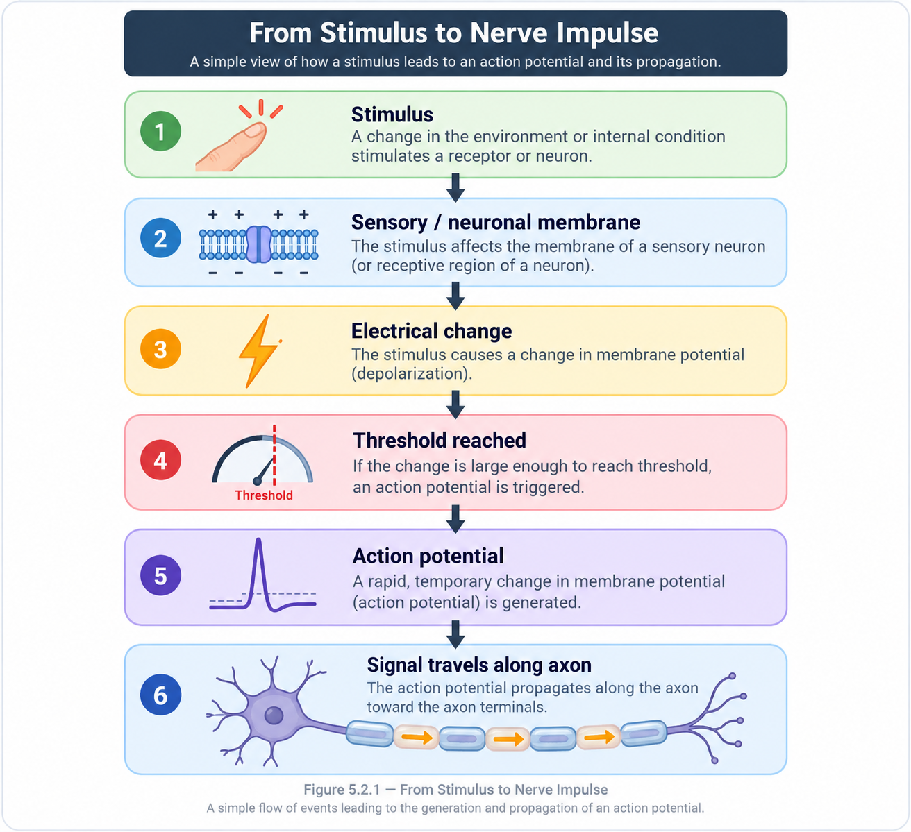
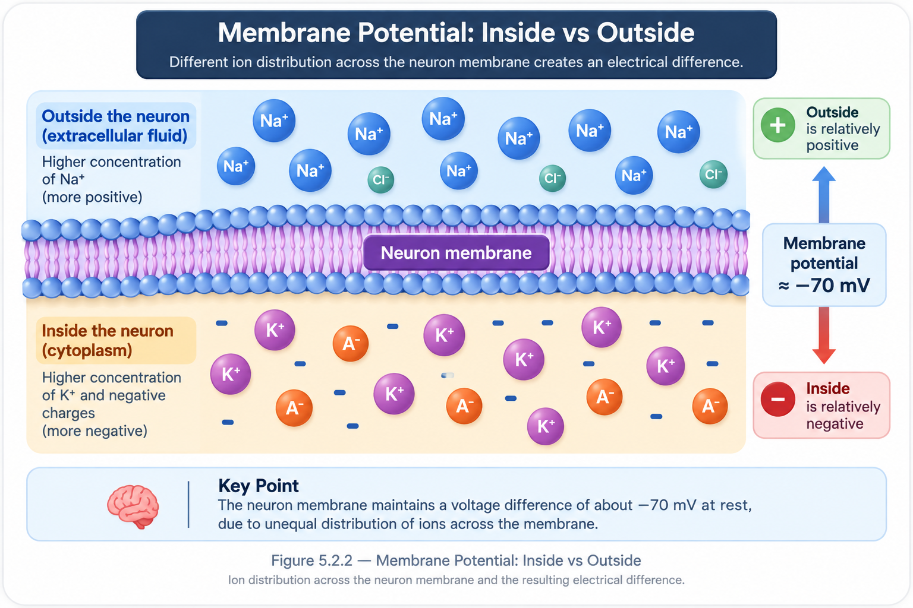
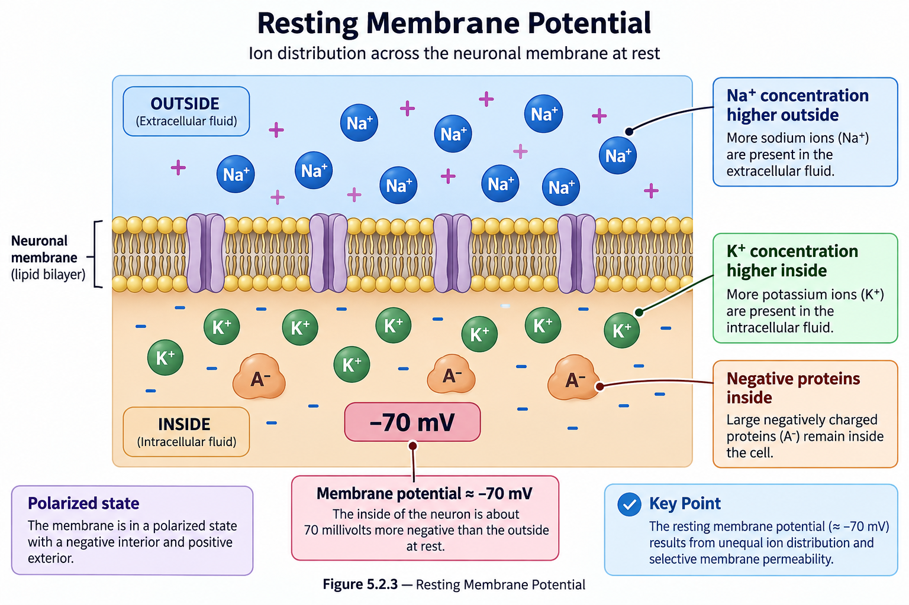
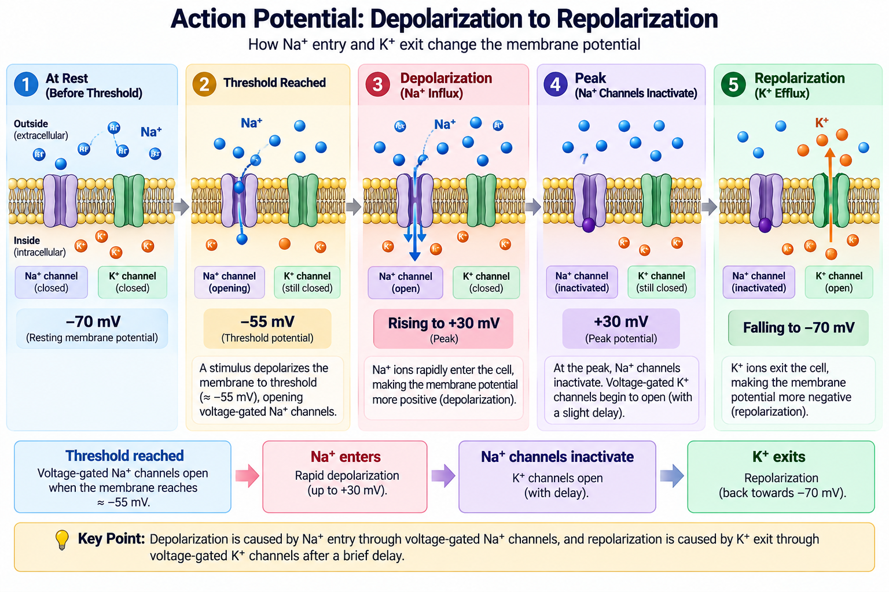
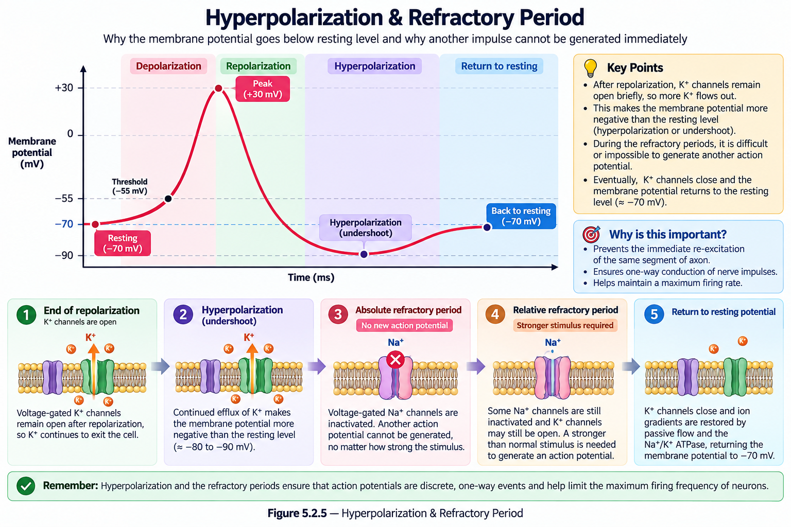
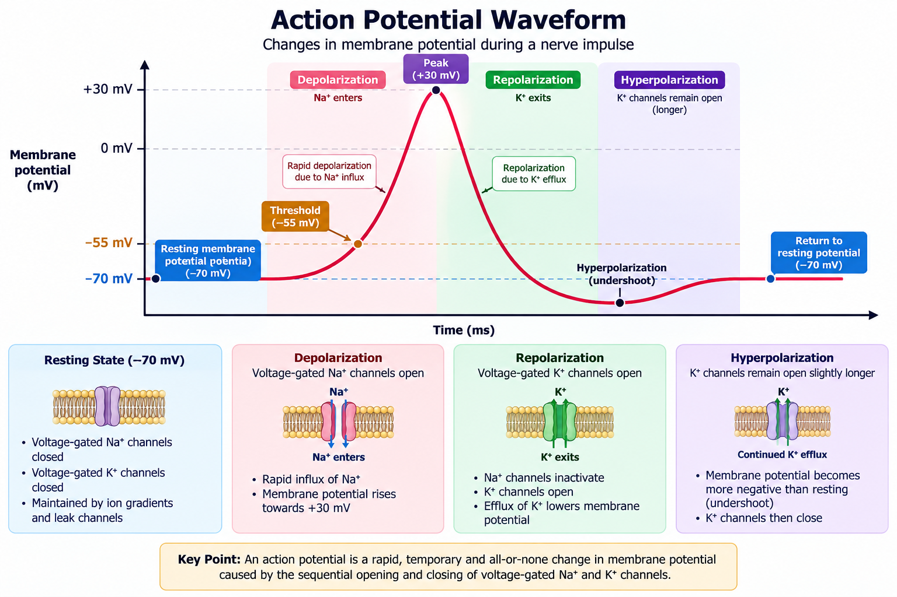
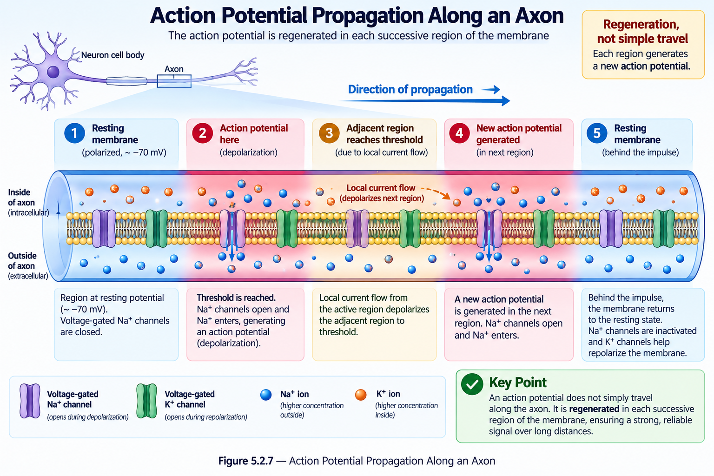
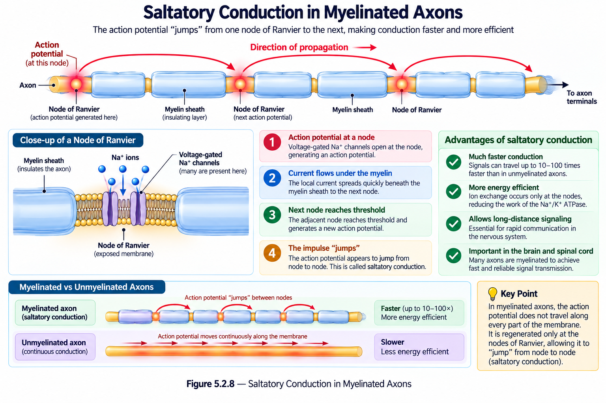
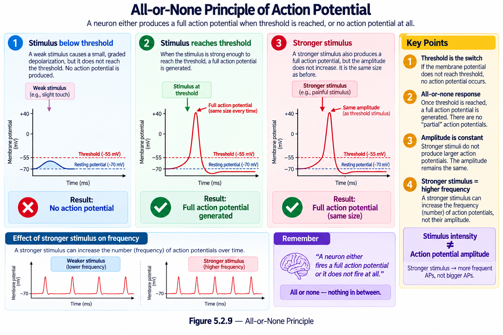

Neurons communicate over distance by generating and propagating electrical signals along their membranes. The rapid electrical event that travels along an axon is called an action potential.
📑 Table of Contents
- 🎯 Learning Objectives
- 📖 Introduction
- ⚡ Membrane Potential
- 🔋 Resting Membrane Potential
- 🎯 Threshold & Action Potential
- ⬆️ Depolarization
- ⬇️ Repolarization
- 🔄 Hyperpolarization & Refractory Period
- ⚡ Complete Action Potential Pathway
- ➡️ Propagation Along the Axon
- 🧵 Myelin & Saltatory Conduction
- 💡 All-or-None Principle
- 📌 Quick Revision
- ❓ Practice Quiz
🎯 Learning Objectives
After completing this lesson, you should be able to:
- Explain the basic idea of a nerve impulse.
- Describe the resting membrane potential of a neuron.
- Explain the role of threshold in generating an action potential.
- Describe depolarization and repolarization.
- Explain hyperpolarization and the refractory period.
- Describe how an action potential propagates along an axon.
- Explain how myelin increases the speed of signal conduction.
- State the basic meaning of the all-or-none principle.
📖 Introduction
A neuron must be able to change its electrical state in order to communicate information.
At rest, the membrane has a difference in electrical charge between the inside and outside of the cell. When an appropriate stimulus reaches threshold, this membrane potential changes rapidly.
An action potential is a rapid, temporary change in membrane potential that propagates along the axon.

⚡ Membrane Potential
A neuron has an electrical difference between the inside and outside of its cell membrane. This difference is called the membrane potential.
Membrane potential is measured in millivolts (mV). It develops because ions are distributed differently on the two sides of the membrane and the membrane controls the movement of these ions.
The membrane potential can change when ions move across the membrane. These changes in electrical state are important for generating and transmitting signals in neurons.

📌 Key Idea
Membrane potential → electrical difference across the neuron membrane
🔋 Resting Membrane Potential
When a neuron is not producing an action potential, its membrane maintains a voltage difference called the resting membrane potential.
The inside of the neuron is electrically more negative than the outside under resting conditions.

📌 Remember
Resting neuron → membrane is polarized
🎯 Threshold & Action Potential
Not every small change in membrane potential produces an action potential.
A stimulus must depolarize the membrane sufficiently to reach a critical level called the threshold.
📌 Key Idea
Below threshold → no action potential
Threshold reached → action potential begins
⬆️ Depolarization
Once threshold is reached, voltage-gated sodium channels open rapidly.
Sodium ions move into the neuron, causing the membrane potential to become less negative and then more positive.
Sodium ions move inward as voltage-gated Na⁺ channels open.
📌 Remember
Depolarization → Na⁺ moves in
⬇️ Repolarization
After the membrane reaches its peak, sodium channel activity decreases and voltage-gated potassium channels open.
Potassium ions move out of the neuron, causing the membrane potential to become more negative again.
Potassium ions move outward as K⁺ channels open.

📌 Remember
Repolarization → K⁺ moves out
🔄 Hyperpolarization & Refractory Period
Potassium channels may remain open briefly after the membrane has returned toward its resting state.
As a result, the membrane potential can temporarily become more negative than its resting level. This phase is called hyperpolarization.
Absolute Refractory Period
A second action potential cannot be generated during this period.
Relative Refractory Period
A stronger-than-usual stimulus may be required to generate another action potential.

📌 Remember
Hyperpolarization → membrane briefly becomes more negative than resting level
⚡ Complete Action Potential Pathway
The action potential can be understood as a sequence of changing membrane states.

🧠 One-Line Sequence
Resting → Threshold → Depolarization → Repolarization → Hyperpolarization → Recovery
➡️ Propagation Along the Axon
An action potential generated at one region of the axon causes adjacent membrane regions to reach threshold.
In this way, the electrical signal propagates along the axon toward the axon terminals.

The action potential is regenerated along the axon rather than simply being a single electrical event travelling unchanged from one end to the other.
🧵 Myelin & Saltatory Conduction
Myelin forms an insulating sheath around many axons. Gaps between myelinated segments are called nodes of Ranvier.
In myelinated axons, action potentials are regenerated at the nodes, producing a pattern called saltatory conduction.

📌 Remember
Myelin → faster impulse conduction
Node to node → saltatory conduction
💡 All-or-None Principle
Once threshold is reached, an action potential is generated. A stronger stimulus does not normally produce a larger individual action potential.

Below Threshold
No action potential
Threshold Reached
Full action potential
Stronger Stimulus
Still a full action potential
📌 Simple Idea
Threshold reached → action potential occurs
📌 Quick Revision
Resting Potential
Neuron is polarized at rest.
Threshold
Critical level required to trigger an action potential.
Depolarization
Na⁺ moves into the neuron.
Repolarization
K⁺ moves out of the neuron.
Hyperpolarization
Membrane temporarily becomes more negative.
Myelin
Increases the speed of impulse conduction.
⚡ Complete Recap
Resting membrane → Threshold → Depolarization → Repolarization → Hyperpolarization → Recovery → Propagation along axon
❓ Practice Quiz
Ready to test your understanding of nerve impulses and action potentials?
Review resting membrane potential, threshold, depolarization, repolarization, refractory periods, propagation, and myelin before taking the quiz.